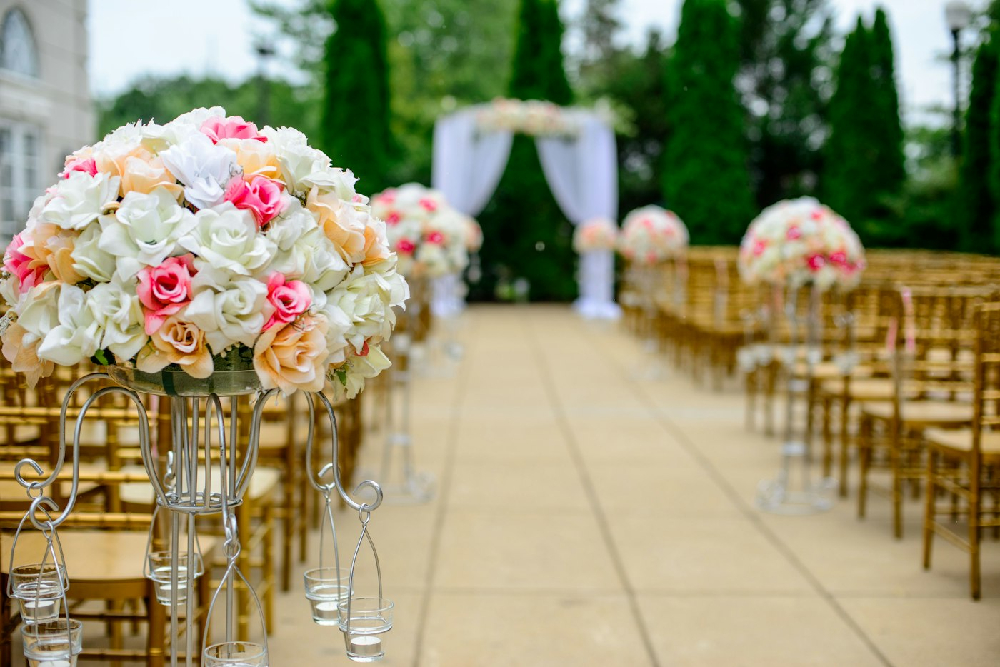

Vier jouw bijzondere momenten
Of je nu een intieme bijeenkomst, een bruisend avondfeest of een smaakvolle lunch wilt organiseren: onze ruimtes en mogelijkheden zorgen voor een onvergetelijke ervaring, helemaal op maat van jouw gelegenheid.

Iets te vieren?
Verjaardag, jubileum, borrel, (kinder)feestje of avondfeest. Voor de hele familie of een kleine groep.
Wat we bieden
- Diverse varianten van lunch en lunchbuffetten
- Borrels met een uitgebreide selectie drankjes en hapjes, en borrelarrangementen
- High tea met diverse zoete en hartige lekkernijen
- Diverse dinermogelijkheden: 3-gangen keuzemenu, barbecue uit onze buitenkeuken, walking diner, Mediterraans buffet, satébuffet, warm & koud buffet
- Avondfeest, compleet met onze huis-DJ
Voor groepen is het mogelijk om buiten de reguliere openingstijden gebruik te maken van onze locatie.
Extra mogelijkheden
In samenwerking met diverse partijen kunnen we jouw gelegenheid nog specialer maken.
Waarom Smaak & Stijl?
Omdat elk evenement bij ons een unieke beleving is. Van sfeervolle aankleding tot heerlijke gerechten: wij zorgen dat je samen met je gezelschap optimaal geniet.
Onze ruimtes
Van intiem tot groots, binnen en buiten.
De Lounge
Het loungegedeelte van ons paviljoen met aangrenzend zijterras. Ideaal voor borrels of (kinder)feestjes.
Het Paviljoen
Het gehele paviljoen met aangrenzend terras. Geschikt voor grotere evenementen en avondfeesten, eventueel met een DJ.
De Huiskamer
Ideaal voor een intieme high tea, een privé lunch, borrel of diner.
Trouwen bij Smaak & Stijl
Jullie droomdag begint hier. Midden in een landelijke omgeving, omringd door weilanden: een intieme ceremonie buiten, een bruisend feest binnen, of alles daartussenin.
- Officiële trouwlocatie. Smaak & Stijl is een erkende trouwlocatie bij de Gemeente Nieuwegein. Jullie kunnen hier officieel in het huwelijk treden, zonder extra reistijd of gedoe.
- Alles op één plek. Van de ceremonie tot het proosten, het diner en het avondfeest: wij regelen het volledig voor jullie. Kies uit diverse buffetopties, een walking diner of een combinatie die bij jullie past.
- Muziek. Onze huis-DJ zorgt voor een spetterend feest, maar je mag ook je eigen DJ meenemen.
- Binnen en buiten. Van frisse buitenlucht tot een gezellige binnenlocatie: beide kan, zodat jullie dag aansluit bij jullie wensen.
- Bereikbaarheid. Goed bereikbaar met het OV en de auto, met gratis parkeergelegenheid voor jullie en jullie gasten.

Plan een rondleiding
Benieuwd hoe jullie droomdag eruit kan zien? Laat ons jullie helpen om er een onvergetelijke belevenis van te maken, met oog voor elk detail, smaakvolle gerechten en een feest dat nog lang wordt herinnerd.
Plan je gelegenheid
Neem contact op en we denken graag met je mee over de mogelijkheden.